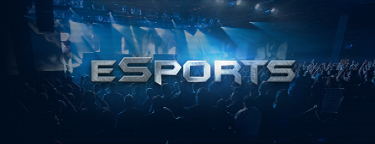
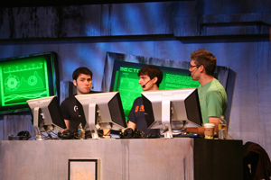
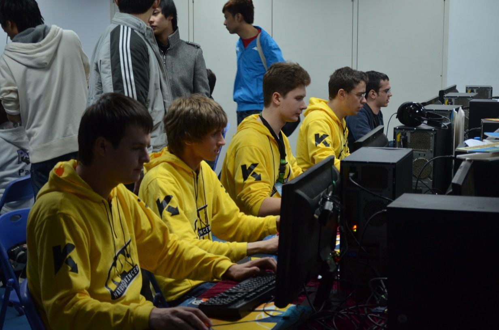

E-Sports(){
Games
Por: Ari Junior

E-Sports
E-Sports, ou Esportes Eletrônicos são jogos que não são encarados como passatempo ou lazer, mas sim como um conjunto que engloba as atividades de um esporte tradicional, como treinamento, competições, etc. Porém, tudo acontece virtualmente, em uma plataforma eletrônica. Vale lembrar que nem todas as pessoas que jogam um jogo que se enquadra em uma modalidade de E-Sports estão ligadas a esse mundo. Como todo esporte existem aqueles que o praticam casualmente, os amadores e aqueles que praticam profissionalmente e acreditem ou não são pagos para isso.
ShowCaster

ShowCasters
O ShowCaster é aquele que passa as informações relevantes para quem esta assistindo o evento, passa a emoção do jogo, dentre outras coisas. Pode ser comparado a um narrador de um transmissão esportiva convencional.
Os Cyber Atletas

Cyber Atletas
Os cyber atletas possuem uma rotina parecida à de um praticante de qualquer outro esporte. O jogo é encarado como uma profissão e não com lazer, e os treinamentos são baseados desde o conceito até o treino de habilidades físicas, duvida? Um jogador profissional de StarCraft geralmente tem uma coordenação motora com o mouse tão superior que pode ser comparada à habilidade de um jogador de futebol em relação a seu chute preciso. A média de Ações Por Minuto (“APM”) de um jogador profissional ultrapassa facilmente uma centena, chegando em momentos críticos ao patamar de 300 APM. Para comparar, um jogador casual raramente atinge ou ultrapassa a faixa das 50 APM. Esse valor tão alto se deve aos longos e excessivos treinamentos. Além disso, para ser um jogador profissional é preciso muito entendimento e muita elaboração conceitual e não, não é possível chegar nesse nível em pouco tempo.
Referências:
}